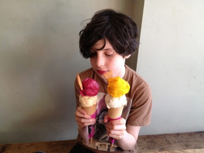

Ice Creams & Sorbets hand made in Tufnell Park, London’s Victorian Dairy.
Local, fresh ingredients churned with 100% organic milk.
118 Fortess Road, London NW5 2HL | 020 7609 0444
Closed ALL of January | Re-open 1 Feb 11:00-19:00
Testimonials

Dear Julie,
It was a huge success everybody loved it.
I am looking fwd to all the future celebrations in our home, we will always be your faithful customers.
Thank you soooooo much!
- - - - - - - - - - -
The cake was great thank you! By the time they got to eat it they were stuffed full of home made cupcakes and brownies, but Camille was really happy with it.
Same time next year... shall I put the order in now?
- - - - - - - - - - -
The cakes were extremely well received and were all devoured and became the main talking point of the evening indeed..
All feedback was very positive - thank you very much for doing them...
I will no doubt be back for more...
- - - - - - - - - - -
Dear Julie
We loved the cake and the biscuits. My husband who is Italian said the ice cream cake reminded him of the one his grandma used to make.
Looking forward to ordering another cake in the near future.
Your Salted Caramel Is evil and you should patent the recipe...
and my sister in law raved about all the flavours and normally she does not like chocolate she says but was converted by yours.
- - - - - - - - - - -
Hi Julie
I recently tried your ice cream - actually one of your sorbets, the Pomegranate - and have to say it is by far the most delicious iced product - of any description - I have EVER eaten! The tanginess, the texture and the lightness were just perfection. I'm wondering how I might get hold of some. I would love to take some tomorrow (Sunday) to a dinner party I'm going to and am wondering if this is too short notice? If it were at all possible I would love one pot of the pomegranate sorbet and one of the chocolate ice cream.
- - - - - - - - - - -
Hi Julie
Nice to hear from you.
Yes the bombes were delicious and so beautifully decorated for our pirate theme.
I think we may have over ordered as all the children (25) actually only ate one of the bombes BUT that was not necessarily a bad thing - it meant we got to feast on the other one greedily and happily by ourselves!
Thanks again
- - - - - - - - - - -
Thanks Julie bombe went down a treat and it was so great to get home and have it sitting there on the table, really good of you to drop it off.
See you soon no doubt!
- - - - - - - - - - -
Perfect
Thanks we had such a lovely time... We loved everything although the mulled wine a unbeatable favourite, the elderflower is so gorgeously delicate and both gingers fantastic!
We loved the Christmas bombe and parfait...and are still arguing over the best swill roll... I say chocolate hazelnut!
The baked Alaskas were a triumph! And I volunteer to be a home tester!!!
And I definitely have to try the port and Stilton on crackers for the home crowd
What a magical evening
Thanks so much
Jo
- - - - - - - - - - -
Hi Julie,
Here is a snap of the wonderful cake. Thank you so much, he absolutely loved and it tasted so delicious I think we will be ordering them just to munch even when it's not a special occasion;)
It made nicks birthday extra special and I'm hoping this means he'll get me one for my birthday heh!
Have a good week, I've been seeing lots of exciting festive tasting tweets,